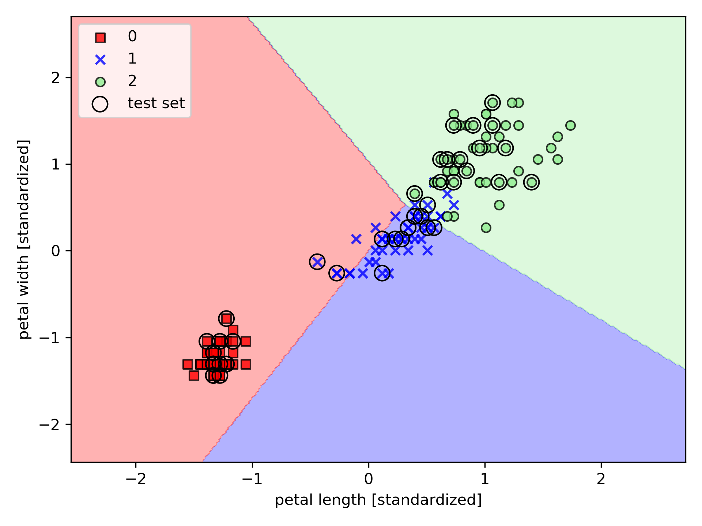
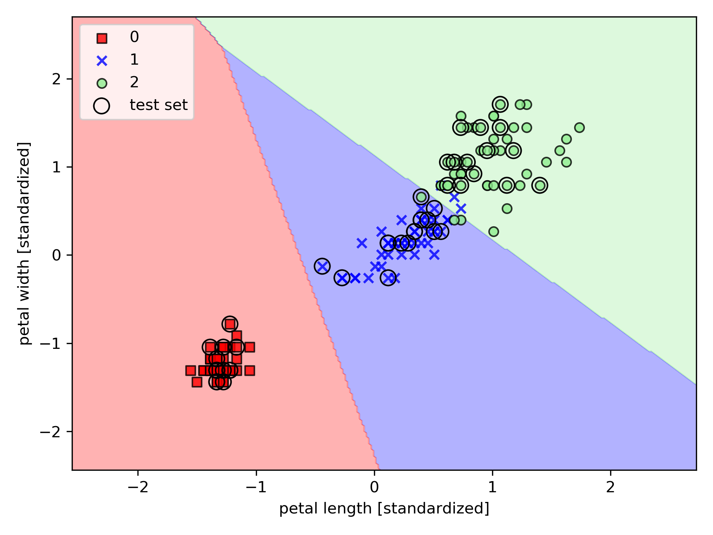
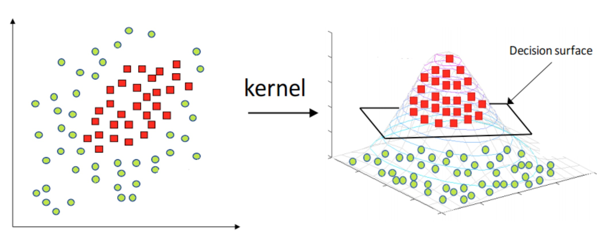
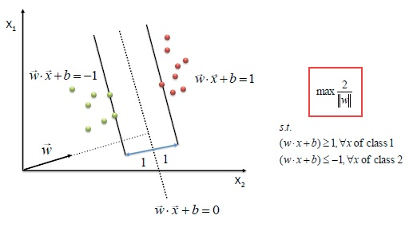
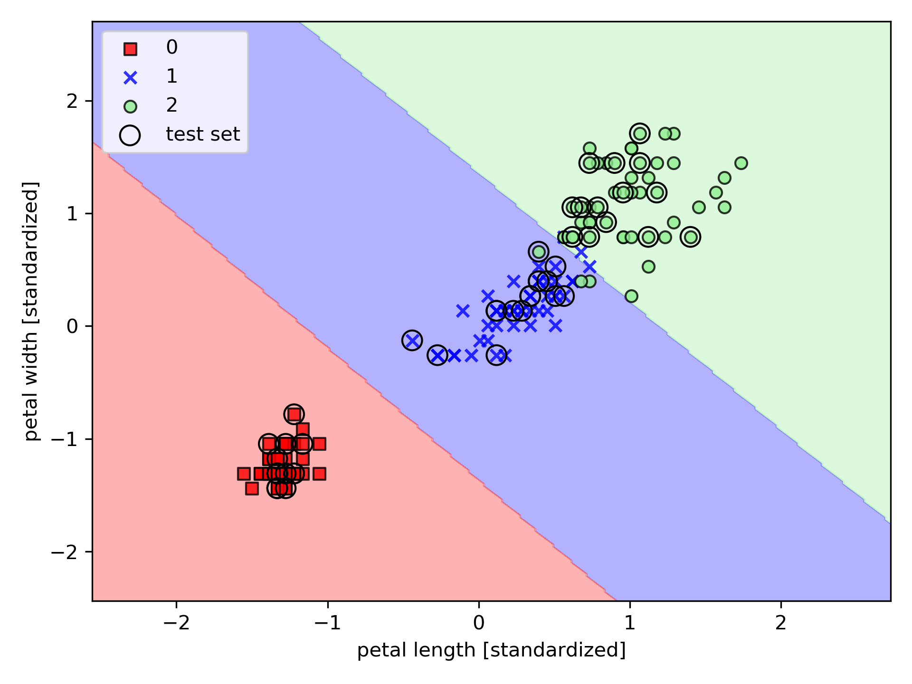
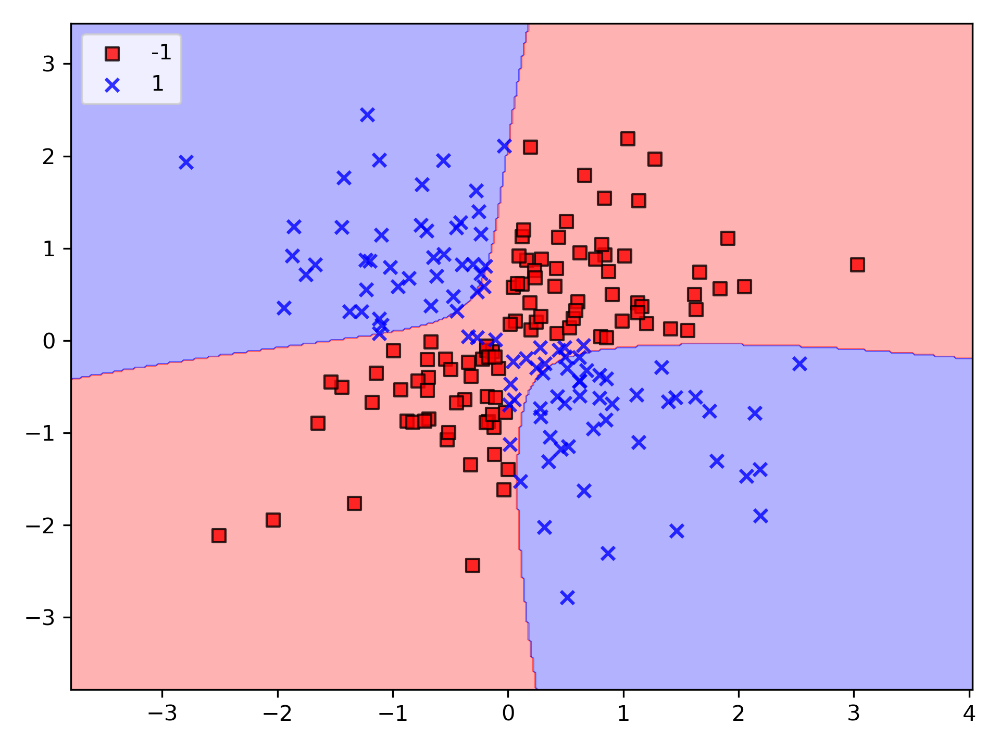
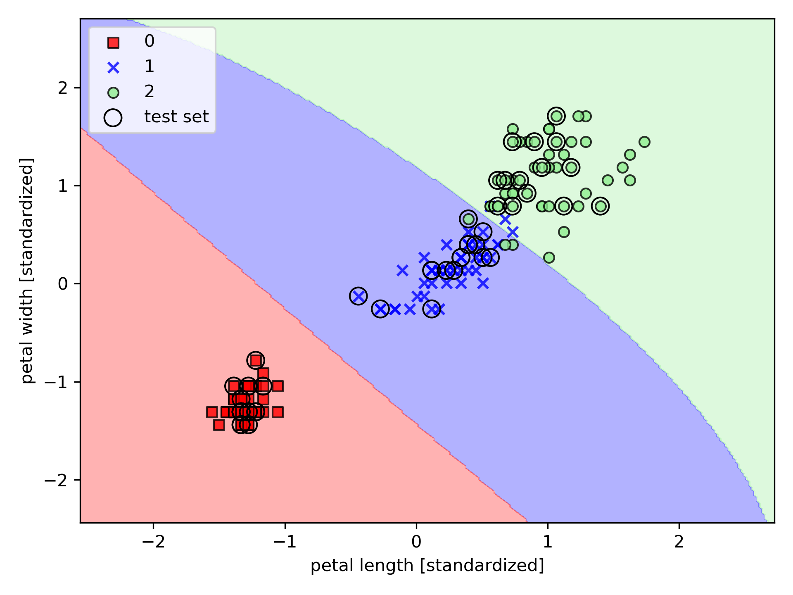
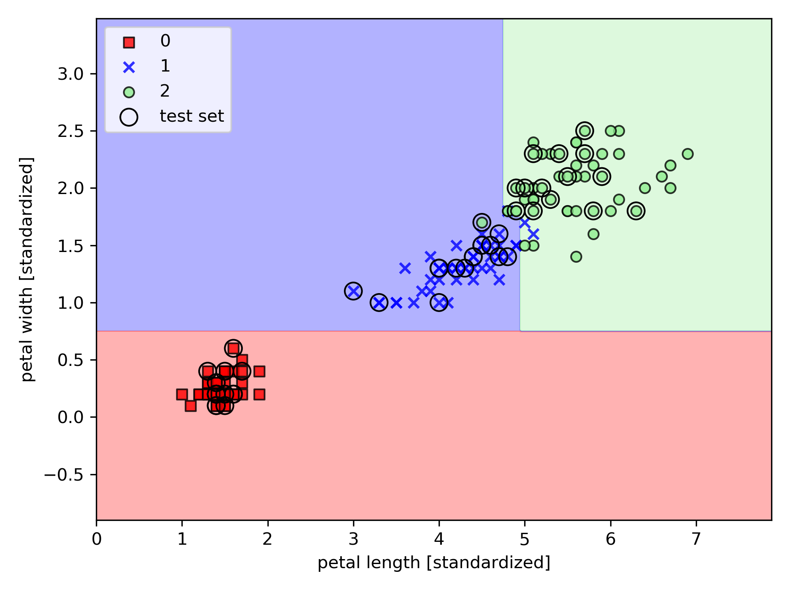
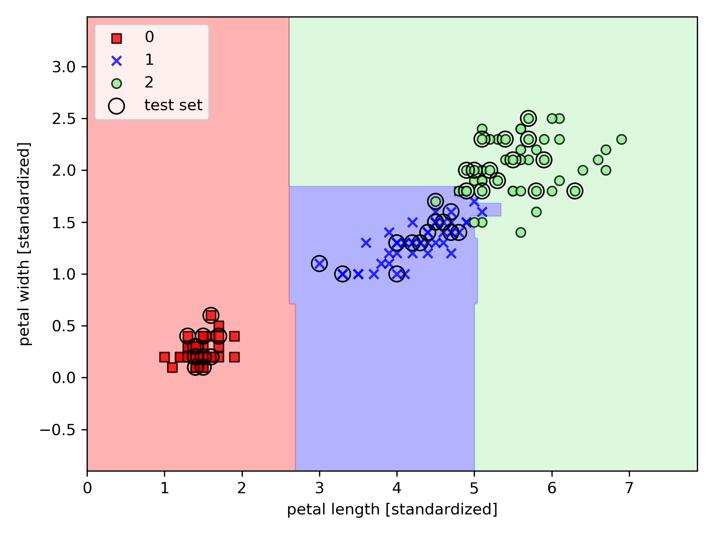
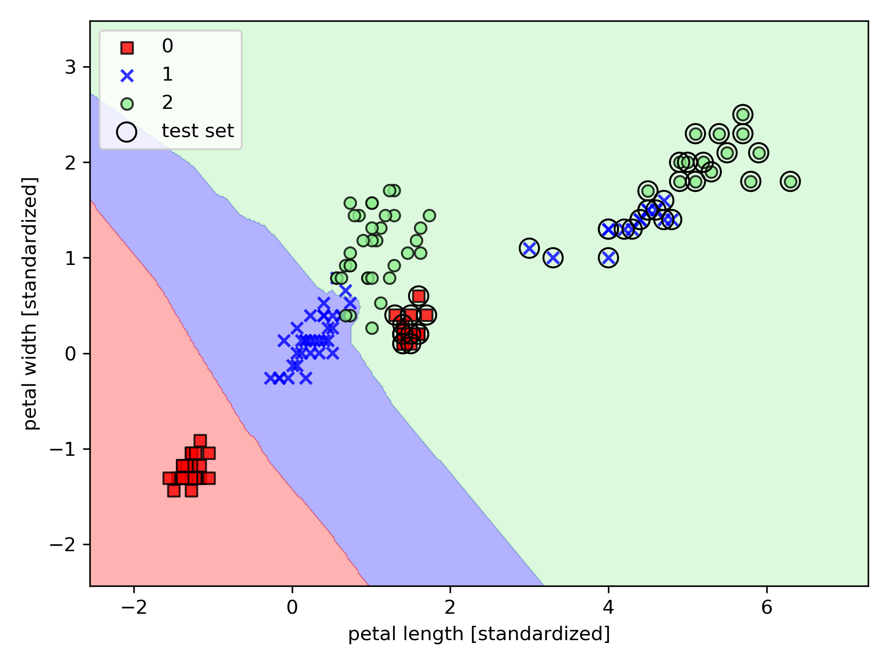

Scikit Learn
Table of Contents
1. 簡介
scikit-learn，又寫作 sklearn，是一個開源的基於 python 語言的機器學習工具包。它通過 NumPy, SciPy 和 Matplotlib 等 python 數值計算的庫實現高效的算法應用，並且涵蓋了幾乎所有主流機器學習算法1。
工程應用中，用 python 手寫代碼來從頭實現一個算法的可能性非常低，這樣不僅耗時耗力，還不一定能夠寫出構架清晰，穩定性強的模型。更多情況下，是分析採集到的數據，根據數據特徵選擇適合的算法，在工具包中調用算法，調整算法的參數，獲取需要的信息，從而實現算法效率和效果之間的平衡。而 sklearn，正是這樣一個可以幫助我們高效實現算法應用的工具包。
sklearn 有一個完整而豐富的官網，裡面講解了基於 sklearn 對所有算法的實現和簡單應用。
2. 常用模組
sklearn 中常用的模塊有分類、回歸、聚類、降維、模型選擇、預處理。
- 分類：識別某個對象屬於哪個類別，常用的算法有：SVM（支持向量機）、nearest neighbors（最近鄰）、random forest（隨機森林），常見的應用有：垃圾郵件識別、圖像識別。
- 回歸：預測與對象相關聯的連續值屬性，常見的算法有：SVR（支持向量機）、 ridge regression（嶺回歸）、Lasso，常見的應用有：藥物反應，預測股價。
- 聚類：將相似對象自動分組，常用的算法有：k-Means、 spectral clustering、mean-shift，常見的應用有：客戶細分，分組實驗結果。
- 降維：減少要考慮的隨機變量的數量，常見的算法有：PCA（主成分分析）、feature selection（特徵選擇）、non-negative matrix factorization（非負矩陣分解），常見的應用有：可視化，提高效率。
- 模型選擇：比較，驗證，選擇參數和模型，常用的模塊有：grid search（網格搜索）、cross validation（交叉驗證）、 metrics（度量）。它的目標是通過參數調整提高精度。
- 預處理：特徵提取和歸一化，常用的模塊有：preprocessing，feature extraction，常見的應用有：把輸入數據（如文本）轉換為機器學習算法可用的數據。
3. 分類：識別某個對象屬於哪個類別
解決分類問題要先理解：每個演算法都是基於某些特定前提之下所開發，各有優缺點，故，沒有任何一個分類器可以面對所有情境均能取得最佳解，以下以一資料集(鳶尾花)為例，取出其中兩種屬性，利用不同的分類法進行分類，包括：perception, logistic, SVM, decision tree, k-nearest。
4. 使用 scikit-learn: 感知器演算法
1: from sklearn import datasets 2: import numpy as np 3: 4: # 讀入資料 5: iris = datasets.load_iris() 6: X = iris.data[:, [2, 3]] 7: y = iris.target 8: 9: print('Class labels:', np.unique(y)) 10: 11: # 預處理：將資料分為訓練和測試 12: # stratify=y, 表示會將資料依test_size比例回傳 13: from sklearn.model_selection import train_test_split 14: X_train, X_test, y_train, y_test = train_test_split( 15: X, y, test_size=0.3, random_state=1, stratify=y) 16: 17: print('Labels counts in y:', np.bincount(y)) 18: print('Labels counts in y_train:', np.bincount(y_train)) 19: print('Labels counts in y_test:', np.bincount(y_test)) 20: 21: # 將資料標準化: 利用preprocessing模組裡的StandardScaler類別 22: from sklearn.preprocessing import StandardScaler 23: sc = StandardScaler() # 實例化一個StandardScaler物件 24: # 利用fit方法，對X_train中每個特徵值估平均數和標準差 25: # 然後對每個特徵值進行標準化(train和test都要做) 26: sc.fit(X_train) 27: X_train_std = sc.transform(X_train) 28: X_test_std = sc.transform(X_test) 29: 30: # =======繪圖副程式======= 31: from matplotlib.colors import ListedColormap 32: import matplotlib.pyplot as plt 33: def plot_decision_regions(X, y, classifier, test_idx=None, resolution=0.02): 34: 35: # setup marker generator and color map 36: markers = ('s', 'x', 'o', '^', 'v') 37: colors = ('red', 'blue', 'lightgreen', 'gray', 'cyan') 38: cmap = ListedColormap(colors[:len(np.unique(y))]) 39: 40: # plot the decision surface 41: x1_min, x1_max = X[:, 0].min() - 1, X[:, 0].max() + 1 42: x2_min, x2_max = X[:, 1].min() - 1, X[:, 1].max() + 1 43: xx1, xx2 = np.meshgrid(np.arange(x1_min, x1_max, resolution), 44: np.arange(x2_min, x2_max, resolution)) 45: Z = classifier.predict(np.array([xx1.ravel(), xx2.ravel()]).T) 46: Z = Z.reshape(xx1.shape) 47: plt.contourf(xx1, xx2, Z, alpha=0.3, cmap=cmap) 48: plt.xlim(xx1.min(), xx1.max()) 49: plt.ylim(xx2.min(), xx2.max()) 50: 51: for idx, cl in enumerate(np.unique(y)): 52: plt.scatter(x=X[y == cl, 0], 53: y=X[y == cl, 1], 54: alpha=0.8, 55: c=colors[idx], 56: marker=markers[idx], 57: label=cl, 58: edgecolor='black') 59: 60: # highlight test samples 61: if test_idx: 62: # plot all samples 63: X_test, y_test = X[test_idx, :], y[test_idx] 64: 65: plt.scatter(X_test[:, 0], 66: X_test[:, 1], 67: c='', 68: edgecolor='black', 69: alpha=1.0, 70: linewidth=1, 71: marker='o', 72: s=100, 73: label='test set') 74: # =======繪圖副程式======= 75: 76: # 訓練perceptron model 77: # 從linear_model模組中載入Perceptron類別,以fit進行訓練 78: from sklearn.linear_model import Perceptron 79: ppn = Perceptron(n_iter_no_change=40, eta0=0.01, random_state=1) 80: ppn.fit(X_train_std, y_train) 81: 82: # 進行預測 83: y_pred = ppn.predict(X_test_std) 84: print('Misclassified samples: %d' % (y_test != y_pred).sum()) 85: #print('Accuracy: %.2f' % accuracy_score(y_test, y_pred)) 86: print('Accuracy: %.2f' % ppn.score(X_test_std, y_test)) 87: 88: # Training a perceptron model using the standardized training data: 89: X_combined_std = np.vstack((X_train_std, X_test_std)) 90: y_combined = np.hstack((y_train, y_test)) 91: 92: plot_decision_regions(X=X_combined_std, y=y_combined, 93: classifier=ppn, test_idx=range(105, 150)) 94: plt.xlabel('petal length [standardized]') 95: plt.ylabel('petal width [standardized]') 96: plt.legend(loc='upper left') 97: 98: plt.tight_layout() 99: plt.savefig('03_01.png', dpi=300) 100: #plt.show()
Class labels: [0 1 2] Labels counts in y: [50 50 50] Labels counts in y_train: [35 35 35] Labels counts in y_test: [15 15 15] Misclassified samples: 3 Accuracy: 0.93
要找出一個合適的學習速率，需要一些實務經驗。如果學習速率過大，演算法會衝過「全域最小值」；如果學習速率過小，則演算法就要迭代很多很多次才會收歛。在上例中，學習速率(eta)在設為 0.1 時，分類準確率為 0.82；而當設為 0.01 時，分類準確率為 0.93。
感知器演算法遇到無法完美「線性分類」的數據時，會導致無法收歛，如圖1。

Figure 1: 線性模式的限制：無法完美分類三種花
5. 使用 scikit-learn: 邏輯斯迴歸
Logistic regression 簡稱 logreg，雖然其中譯為邏輯斯迴歸，但與邏輯無關，也和迴歸沒關係，它本質上是一種分類演算法，常被視為現代機器學習的“Hello world.”。
當要處理的數據並非「線性可分」，則在每一輪的迭代中，總會有一些樣本會被錯誤分類，於是加權就會不斷的被更新，對於這種數據，感知器絕對不會收歛。
要理解 logistic regression, 需先理解「勝算比」(odds ratio)，勝算比可以\( \frac{p}{1-p} \)，其中\(p\)為「正事件」(positive event)的機率，此一詞並不一定意味著好，只是指我們想要預測的事件。例如，某個病患且具有某種疾病的機率；我們可以將「正事件」視為類別標籤 y=1，然後，我們可以進一步定義 logit 函數，稱為「對數勝算」(log-odds)：
\[logit(p) = log\frac{p}{1-p}\]
函數\(logit\)的輸入為 0 到 1 間的值，它會將其轉換為分佈於整個實數範圍內的值，我們可以用它來表達「特徵值」和「勝算比」間的線性關係：
\[logit(p(y=1|x))=w_0x_0+w_1x_1+...+w_mx_m=\sum_{i=1}^{m}=w^tx\]
在此\(p(y=1|x)\)的意思是：給定特徵值 x，當某特定樣本屬於類別 1 的條件機率。
實際上，我們真正感興趣的是：預測某特定樣本屬於特定類別的機率，也就是 logit 函數的反函數，又稱為 logistic 函數。又因為其特殊的 S 形曲線(如圖2)，故有時也被稱為 sigmoid 函數。

Figure 2: sigmoid 函數圖
1: from sklearn import datasets 2: import numpy as np 3: 4: # 讀入資料 5: iris = datasets.load_iris() 6: X = iris.data[:, [2, 3]] 7: y = iris.target 8: 9: print('Class labels:', np.unique(y)) 10: 11: # stratify=y, 表示會將資料依test_size比例回傳 12: from sklearn.model_selection import train_test_split 13: X_train, X_test, y_train, y_test = train_test_split( 14: X, y, test_size=0.3, random_state=1, stratify=y) 15: 16: print('Labels counts in y:', np.bincount(y)) 17: print('Labels counts in y_train:', np.bincount(y_train)) 18: print('Labels counts in y_test:', np.bincount(y_test)) 19: 20: # 將資料標準化: 利用preprocessing模組裡的StandardScaler類別 21: from sklearn.preprocessing import StandardScaler 22: sc = StandardScaler() # 實例化一個StandardScaler物件 23: # 利用fit方法，對X_train中每個特徵值估平均數和標準差 24: # 然後對每個特徵值進行標準化(train和test都要做) 25: sc.fit(X_train) 26: X_train_std = sc.transform(X_train) 27: X_test_std = sc.transform(X_test) 28: 29: # =======繪圖副程式======= 30: from matplotlib.colors import ListedColormap 31: import matplotlib.pyplot as plt 32: def plot_decision_regions(X, y, classifier, test_idx=None, resolution=0.02): 33: 34: # setup marker generator and color map 35: markers = ('s', 'x', 'o', '^', 'v') 36: colors = ('red', 'blue', 'lightgreen', 'gray', 'cyan') 37: cmap = ListedColormap(colors[:len(np.unique(y))]) 38: 39: # plot the decision surface 40: x1_min, x1_max = X[:, 0].min() - 1, X[:, 0].max() + 1 41: x2_min, x2_max = X[:, 1].min() - 1, X[:, 1].max() + 1 42: xx1, xx2 = np.meshgrid(np.arange(x1_min, x1_max, resolution), 43: np.arange(x2_min, x2_max, resolution)) 44: Z = classifier.predict(np.array([xx1.ravel(), xx2.ravel()]).T) 45: Z = Z.reshape(xx1.shape) 46: plt.contourf(xx1, xx2, Z, alpha=0.3, cmap=cmap) 47: plt.xlim(xx1.min(), xx1.max()) 48: plt.ylim(xx2.min(), xx2.max()) 49: 50: for idx, cl in enumerate(np.unique(y)): 51: plt.scatter(x=X[y == cl, 0], 52: y=X[y == cl, 1], 53: alpha=0.8, 54: c=colors[idx], 55: marker=markers[idx], 56: label=cl, 57: edgecolor='black') 58: 59: # highlight test samples 60: if test_idx: 61: # plot all samples 62: X_test, y_test = X[test_idx, :], y[test_idx] 63: 64: plt.scatter(X_test[:, 0], 65: X_test[:, 1], 66: c='', 67: edgecolor='black', 68: alpha=1.0, 69: linewidth=1, 70: marker='o', 71: s=100, 72: label='test set') 73: # =======繪圖副程式======= 74: 75: # 使用scikit-learn訓練一個logistic regression model 76: from sklearn.linear_model import LogisticRegression 77: lr = LogisticRegression(C=100.0, random_state=1) 78: lr.fit(X_train_std, y_train) 79: 80: # Training a perceptron model using the standardized training data: 81: X_combined_std = np.vstack((X_train_std, X_test_std)) 82: y_combined = np.hstack((y_train, y_test)) 83: 84: plot_decision_regions(X_combined_std, y_combined, 85: classifier=lr, 86: test_idx=range(105, 150)) 87: 88: plt.xlabel('petal length [standardized]') 89: plt.ylabel('petal width [standardized]') 90: plt.legend(loc='upper left') 91: 92: plt.tight_layout() 93: plt.savefig('03_06.png', dpi=300) 94: #plt.show() 95: 96: # 進行預測 97: print(lr.predict_proba(X_test_std[:3, :])) 98: print(lr.predict_proba(X_test_std[:3, :]).sum(axis=1)) 99: print(lr.predict_proba(X_test_std[:3, :]).argmax(axis=1)) 100: print(lr.predict(X_test_std[:3, :])) 101: print(lr.predict(X_test_std[0, :].reshape(1, -1))) 102:
Class labels: [0 1 2] Labels counts in y: [50 50 50] Labels counts in y_train: [35 35 35] Labels counts in y_test: [15 15 15] [[3.17983737e-08 1.44886616e-01 8.55113353e-01] [8.33962295e-01 1.66037705e-01 4.55557009e-12] [8.48762934e-01 1.51237066e-01 4.63166788e-13]] [1. 1. 1.] [2 0 0] [2 0 0] [2]

Figure 3: Logistic Regression: 鳶尾花分類
lr.predict_proba(X_test_std[:3, :]))列出一個二維陣列，各列中的最高值均代表預測的答案，故，第一列預測答案為第一類花的機率最高(0.855)；也可以通過找出每列中最大的行值來取得預測的類別標籤：lr.predict_proba(X_test_std[:3, :]).argmax(axis=1))。
6. 使用 SVM
SVM 的目標是在兩種類別(class)的資料點(data points)間找到最佳決策邊界(decision boundaries)，SVM 透過以下兩個步驟來找到決策邊介：
- 把資料映射到一個高維表示法，在此空間屬找最佳決策邊界，一般這個邊人田中中為一超曲面。至於為何要將資料映射到高維度空，可由圖4看出其原理，圖左的二維資料點原本很難找到有效的區分策略，但若將其映射到 3 維空間，這些資料點很有可能會變成圖右的狀況，此時就能透過一個平面將兩類資料點做有效的分割。

Figure 4: SVM 映射高維空間
- 在找超曲面時，超曲面要位於兩類倶料點之間的中線。這步驟稱為最大化邊界(maximizing the margin)，也就是讓曲面分別和兩類資料點保有最大距離，如圖5。

Figure 5: SVM
1: from sklearn import datasets 2: import numpy as np 3: 4: # 讀入資料 5: iris = datasets.load_iris() 6: X = iris.data[:, [2, 3]] 7: y = iris.target 8: 9: print('Class labels:', np.unique(y)) 10: 11: # stratify=y, 表示會將資料依test_size比例回傳 12: from sklearn.model_selection import train_test_split 13: X_train, X_test, y_train, y_test = train_test_split( 14: X, y, test_size=0.3, random_state=1, stratify=y) 15: 16: print('Labels counts in y:', np.bincount(y)) 17: print('Labels counts in y_train:', np.bincount(y_train)) 18: print('Labels counts in y_test:', np.bincount(y_test)) 19: 20: # 將資料標準化: 利用preprocessing模組裡的StandardScaler類別 21: from sklearn.preprocessing import StandardScaler 22: sc = StandardScaler() # 實例化一個StandardScaler物件 23: # 利用fit方法，對X_train中每個特徵值估平均數和標準差 24: # 然後對每個特徵值進行標準化(train和test都要做) 25: sc.fit(X_train) 26: X_train_std = sc.transform(X_train) 27: X_test_std = sc.transform(X_test) 28: 29: # =======繪圖副程式======= 30: from matplotlib.colors import ListedColormap 31: import matplotlib.pyplot as plt 32: def plot_decision_regions(X, y, classifier, test_idx=None, resolution=0.02): 33: 34: # setup marker generator and color map 35: markers = ('s', 'x', 'o', '^', 'v') 36: colors = ('red', 'blue', 'lightgreen', 'gray', 'cyan') 37: cmap = ListedColormap(colors[:len(np.unique(y))]) 38: 39: # plot the decision surface 40: x1_min, x1_max = X[:, 0].min() - 1, X[:, 0].max() + 1 41: x2_min, x2_max = X[:, 1].min() - 1, X[:, 1].max() + 1 42: xx1, xx2 = np.meshgrid(np.arange(x1_min, x1_max, resolution), 43: np.arange(x2_min, x2_max, resolution)) 44: Z = classifier.predict(np.array([xx1.ravel(), xx2.ravel()]).T) 45: Z = Z.reshape(xx1.shape) 46: plt.contourf(xx1, xx2, Z, alpha=0.3, cmap=cmap) 47: plt.xlim(xx1.min(), xx1.max()) 48: plt.ylim(xx2.min(), xx2.max()) 49: 50: for idx, cl in enumerate(np.unique(y)): 51: plt.scatter(x=X[y == cl, 0], 52: y=X[y == cl, 1], 53: alpha=0.8, 54: c=colors[idx], 55: marker=markers[idx], 56: label=cl, 57: edgecolor='black') 58: 59: # highlight test samples 60: if test_idx: 61: # plot all samples 62: X_test, y_test = X[test_idx, :], y[test_idx] 63: 64: plt.scatter(X_test[:, 0], 65: X_test[:, 1], 66: c='', 67: edgecolor='black', 68: alpha=1.0, 69: linewidth=1, 70: marker='o', 71: s=100, 72: label='test set') 73: # =======繪圖副程式======= 74: 75: # Training a perceptron model using the standardized training data: 76: X_combined_std = np.vstack((X_train_std, X_test_std)) 77: y_combined = np.hstack((y_train, y_test)) 78: 79: # 使用SVM來預測 80: from sklearn.svm import SVC 81: svm = SVC(kernel='linear', C=1.0, random_state=1) 82: svm.fit(X_train_std, y_train) 83: 84: plot_decision_regions(X_combined_std, y_combined, 85: classifier=svm, 86: test_idx=range(105, 150)) 87: 88: plt.xlabel('petal length [standardized]') 89: plt.ylabel('petal width [standardized]') 90: plt.legend(loc='upper left') 91: 92: plt.tight_layout() 93: plt.savefig('03_11.png', dpi=300) 94: #plt.show() 95:
Class labels: [0 1 2] Labels counts in y: [50 50 50] Labels counts in y_train: [35 35 35] Labels counts in y_test: [15 15 15]

Figure 6: SVM Regression: 鳶尾花分類
Logistic regression(圖3)與 SVM(圖6)常會產生相似的結果，但 logistic regression 試圖最大化「訓練數據集」的「條件概似」(conditional likelihood)，這會使 logistic regression 比 SVM 更容易傾向「離群值」(outlier)，SVM 主要在意的是那些非常接近「決策邊界」的那些點。Logistic regression 的優點是簡單。
7. 使用 SVM 解決非線性問題
SVM 受到愛用的一個主要原因是它可用「核心化」(kernelized)來解決非線性分類問題(如 XOR)。
1: import numpy as np 2: np.random.seed(1) 3: X_xor = np.random.randn(200, 2) 4: y_xor = np.logical_xor(X_xor[:, 0] > 0, 5: X_xor[:, 1] > 0) 6: y_xor = np.where(y_xor, 1, -1) 7: 8: # =======繪圖副程式======= 9: from matplotlib.colors import ListedColormap 10: import matplotlib.pyplot as plt 11: def polot_decision_regions(X, y, classifier, test_idx=None, resolution=0.02): 12: 13: # setup marker generator and color map 14: markers = ('s', 'x', 'o', '^', 'v') 15: colors = ('red', 'blue', 'lightgreen', 'gray', 'cyan') 16: cmap = ListedColormap(colors[:len(np.unique(y))]) 17: 18: # plot the decision surface 19: x1_min, x1_max = X[:, 0].min() - 1, X[:, 0].max() + 1 20: x2_min, x2_max = X[:, 1].min() - 1, X[:, 1].max() + 1 21: xx1, xx2 = np.meshgrid(np.arange(x1_min, x1_max, resolution), 22: np.arange(x2_min, x2_max, resolution)) 23: Z = classifier.predict(np.array([xx1.ravel(), xx2.ravel()]).T) 24: Z = Z.reshape(xx1.shape) 25: plt.contourf(xx1, xx2, Z, alpha=0.3, cmap=cmap) 26: plt.xlim(xx1.min(), xx1.max()) 27: plt.ylim(xx2.min(), xx2.max()) 28: 29: for idx, cl in enumerate(np.unique(y)): 30: plt.scatter(x=X[y == cl, 0], 31: y=X[y == cl, 1], 32: alpha=0.8, 33: c=colors[idx], 34: marker=markers[idx], 35: label=cl, 36: edgecolor='black') 37: 38: # highlight test samples 39: if test_idx: 40: # plot all samples 41: X_test, y_test = X[test_idx, :], y[test_idx] 42: 43: plt.scatter(X_test[:, 0], 44: X_test[:, 1], 45: c='', 46: edgecolor='black', 47: alpha=1.0, 48: linewidth=1, 49: marker='o', 50: s=100, 51: label='test set') 52: # =======繪圖副程式======= 53: 54: # ## Using the kernel trick to find separating hyperplanes in higher dimensional space 55: from sklearn.svm import SVC 56: svm = SVC(kernel='rbf', random_state=1, gamma=0.10, C=10.0) 57: svm.fit(X_xor, y_xor) 58: plot_decision_regions(X_xor, y_xor, 59: classifier=svm) 60: plt.legend(loc='upper left') 61: plt.tight_layout() 62: plt.savefig('03_14.png', dpi=300) 63: #plt.show() 64:

Figure 7: SVM 解決非線性問題: XOR
1: from sklearn import datasets 2: import numpy as np 3: 4: # 讀入資料 5: iris = datasets.load_iris() 6: X = iris.data[:, [2, 3]] 7: y = iris.target 8: 9: print('Class labels:', np.unique(y)) 10: 11: # stratify=y, 表示會將資料依test_size比例回傳 12: from sklearn.model_selection import train_test_split 13: X_train, X_test, y_train, y_test = train_test_split( 14: X, y, test_size=0.3, random_state=1, stratify=y) 15: 16: print('Labels counts in y:', np.bincount(y)) 17: print('Labels counts in y_train:', np.bincount(y_train)) 18: print('Labels counts in y_test:', np.bincount(y_test)) 19: 20: # 將資料標準化: 利用preprocessing模組裡的StandardScaler類別 21: from sklearn.preprocessing import StandardScaler 22: sc = StandardScaler() # 實例化一個StandardScaler物件 23: # 利用fit方法，對X_train中每個特徵值估平均數和標準差 24: # 然後對每個特徵值進行標準化(train和test都要做) 25: sc.fit(X_train) 26: X_train_std = sc.transform(X_train) 27: X_test_std = sc.transform(X_test) 28: 29: # =======繪圖副程式======= 30: from matplotlib.colors import ListedColormap 31: import matplotlib.pyplot as plt 32: def plot_decision_regions(X, y, classifier, test_idx=None, resolution=0.02): 33: 34: # setup marker generator and color map 35: markers = ('s', 'x', 'o', '^', 'v') 36: colors = ('red', 'blue', 'lightgreen', 'gray', 'cyan') 37: cmap = ListedColormap(colors[:len(np.unique(y))]) 38: 39: # plot the decision surface 40: x1_min, x1_max = X[:, 0].min() - 1, X[:, 0].max() + 1 41: x2_min, x2_max = X[:, 1].min() - 1, X[:, 1].max() + 1 42: xx1, xx2 = np.meshgrid(np.arange(x1_min, x1_max, resolution), 43: np.arange(x2_min, x2_max, resolution)) 44: Z = classifier.predict(np.array([xx1.ravel(), xx2.ravel()]).T) 45: Z = Z.reshape(xx1.shape) 46: plt.contourf(xx1, xx2, Z, alpha=0.3, cmap=cmap) 47: plt.xlim(xx1.min(), xx1.max()) 48: plt.ylim(xx2.min(), xx2.max()) 49: 50: for idx, cl in enumerate(np.unique(y)): 51: plt.scatter(x=X[y == cl, 0], 52: y=X[y == cl, 1], 53: alpha=0.8, 54: c=colors[idx], 55: marker=markers[idx], 56: label=cl, 57: edgecolor='black') 58: 59: # highlight test samples 60: if test_idx: 61: # plot all samples 62: X_test, y_test = X[test_idx, :], y[test_idx] 63: 64: plt.scatter(X_test[:, 0], 65: X_test[:, 1], 66: c='', 67: edgecolor='black', 68: alpha=1.0, 69: linewidth=1, 70: marker='o', 71: s=100, 72: label='test set') 73: # =======繪圖副程式======= 74: 75: # Training a perceptron model using the standardized training data: 76: X_combined_std = np.vstack((X_train_std, X_test_std)) 77: y_combined = np.hstack((y_train, y_test)) 78: 79: # 使用SVM來預測鳶尾花 80: from sklearn.svm import SVC 81: svm = SVC(kernel='rbf', random_state=0, gamma=0.10, C=10.0) 82: svm.fit(X_train_std, y_train) 83: 84: plot_decision_regions(X_combined_std, y_combined, 85: classifier=svm, 86: test_idx=range(105, 150)) 87: 88: plt.xlabel('petal length [standardized]') 89: plt.ylabel('petal width [standardized]') 90: plt.legend(loc='upper left') 91: 92: plt.tight_layout() 93: plt.savefig('03_15.png', dpi=300) 94: #plt.show() 95:
Class labels: [0 1 2] Labels counts in y: [50 50 50] Labels counts in y_train: [35 35 35] Labels counts in y_test: [15 15 15]

Figure 8: SVM: 鳶尾花分類
8. 使用決策樹
「決策樹」可透過劃分特徵空間來建構複雜的矩形「決策邊界」。然而，越深的「決策樹」便會產生越複雜的「決策邊界」，因而導致過度擬知。以下透過 scikit-learn，以「熵」作為「不純度」的標準，訓練一個深度最多為 3 的「決策樹」。
1: from sklearn import datasets 2: import numpy as np 3: 4: # 讀入資料 5: iris = datasets.load_iris() 6: X = iris.data[:, [2, 3]] 7: y = iris.target 8: 9: print('Class labels:', np.unique(y)) 10: 11: # stratify=y, 表示會將資料依test_size比例回傳 12: from sklearn.model_selection import train_test_split 13: X_train, X_test, y_train, y_test = train_test_split( 14: X, y, test_size=0.3, random_state=1, stratify=y) 15: 16: print('Labels counts in y:', np.bincount(y)) 17: print('Labels counts in y_train:', np.bincount(y_train)) 18: print('Labels counts in y_test:', np.bincount(y_test)) 19: 20: # 將資料標準化: 利用preprocessing模組裡的StandardScaler類別 21: from sklearn.preprocessing import StandardScaler 22: sc = StandardScaler() # 實例化一個StandardScaler物件 23: # 利用fit方法，對X_train中每個特徵值估平均數和標準差 24: # 然後對每個特徵值進行標準化(train和test都要做) 25: sc.fit(X_train) 26: X_train_std = sc.transform(X_train) 27: X_test_std = sc.transform(X_test) 28: 29: # =======繪圖副程式======= 30: from matplotlib.colors import ListedColormap 31: import matplotlib.pyplot as plt 32: def plot_decision_regions(X, y, classifier, test_idx=None, resolution=0.02): 33: 34: # setup marker generator and color map 35: markers = ('s', 'x', 'o', '^', 'v') 36: colors = ('red', 'blue', 'lightgreen', 'gray', 'cyan') 37: cmap = ListedColormap(colors[:len(np.unique(y))]) 38: 39: # plot the decision surface 40: x1_min, x1_max = X[:, 0].min() - 1, X[:, 0].max() + 1 41: x2_min, x2_max = X[:, 1].min() - 1, X[:, 1].max() + 1 42: xx1, xx2 = np.meshgrid(np.arange(x1_min, x1_max, resolution), 43: np.arange(x2_min, x2_max, resolution)) 44: Z = classifier.predict(np.array([xx1.ravel(), xx2.ravel()]).T) 45: Z = Z.reshape(xx1.shape) 46: plt.contourf(xx1, xx2, Z, alpha=0.3, cmap=cmap) 47: plt.xlim(xx1.min(), xx1.max()) 48: plt.ylim(xx2.min(), xx2.max()) 49: 50: for idx, cl in enumerate(np.unique(y)): 51: plt.scatter(x=X[y == cl, 0], 52: y=X[y == cl, 1], 53: alpha=0.8, 54: c=colors[idx], 55: marker=markers[idx], 56: label=cl, 57: edgecolor='black') 58: 59: # highlight test samples 60: if test_idx: 61: # plot all samples 62: X_test, y_test = X[test_idx, :], y[test_idx] 63: 64: plt.scatter(X_test[:, 0], 65: X_test[:, 1], 66: c='', 67: edgecolor='black', 68: alpha=1.0, 69: linewidth=1, 70: marker='o', 71: s=100, 72: label='test set') 73: # =======繪圖副程式======= 74: 75: # Training a perceptron model using the standardized training data: 76: X_combined = np.vstack((X_train, X_test)) 77: y_combined = np.hstack((y_train, y_test)) 78: 79: # 使用決策樹來預測鳶尾花 80: from sklearn.tree import DecisionTreeClassifier 81: tree = DecisionTreeClassifier(criterion='gini', 82: max_depth=4, 83: random_state=1) 84: tree.fit(X_train, y_train) 85: 86: plot_decision_regions(X_combined, y_combined, 87: classifier=tree, 88: test_idx=range(105, 150)) 89: 90: plt.xlabel('petal length [standardized]') 91: plt.ylabel('petal width [standardized]') 92: plt.legend(loc='upper left') 93: 94: plt.tight_layout() 95: plt.savefig('03_17.png', dpi=300) 96: #plt.show() 97:
Class labels: [0 1 2] Labels counts in y: [50 50 50] Labels counts in y_train: [35 35 35] Labels counts in y_test: [15 15 15]

Figure 9: Decision Tree: 鳶尾花分類
9. 使用隨機森林結合決策樹
「隨機森林」(random forest)可被視為多個「決策樹」結合成的一個整體(ensemble)，隨機森林的想法是結合多個具有高變異的深度決策樹，將它們的結果平均，來建構一個更強固的模型，這種模型的「一般化誤差」較低，也較不會發生過度擬合的問題。
隨機森林演算法可以簡單歸納為下列四個步驟：
- 定義大小為 n 的隨機「自助」(bootstrap)樣本（從「訓練樣本集」中隨機選擇 n 個樣本，採用「取出後放回」方式）。
- 從 bootstrap 樣本中導出決策樹：
- 隨機選擇 d 個特徵
- 使用特徵分割該節點，依「目標函數」找出最佳方式
- 隨機選擇 d 個特徵
- 重複 k 次步驟 1 與 2
- 匯總所有決策樹的預測，以「多數決」(majority voting)的方式來指定類別標籤。
隨機森林的一大優勢是我們不必擔心如何選擇一個好的「超參數」值，一般而言，我們不需修剪「隨機森林」，因為「整體學習模型」是相當強固的，個別「決策樹」的雜訊不會影響整體結果。我們唯一真正需要關心的參數是上述步驟中的數量 k。
1: from sklearn import datasets 2: import numpy as np 3: 4: # 讀入資料 5: iris = datasets.load_iris() 6: X = iris.data[:, [2, 3]] 7: y = iris.target 8: 9: print('Class labels:', np.unique(y)) 10: 11: # stratify=y, 表示會將資料依test_size比例回傳 12: from sklearn.model_selection import train_test_split 13: X_train, X_test, y_train, y_test = train_test_split( 14: X, y, test_size=0.3, random_state=1, stratify=y) 15: 16: print('Labels counts in y:', np.bincount(y)) 17: print('Labels counts in y_train:', np.bincount(y_train)) 18: print('Labels counts in y_test:', np.bincount(y_test)) 19: 20: # 將資料標準化: 利用preprocessing模組裡的StandardScaler類別 21: from sklearn.preprocessing import StandardScaler 22: sc = StandardScaler() # 實例化一個StandardScaler物件 23: # 利用fit方法，對X_train中每個特徵值估平均數和標準差 24: # 然後對每個特徵值進行標準化(train和test都要做) 25: sc.fit(X_train) 26: X_train_std = sc.transform(X_train) 27: X_test_std = sc.transform(X_test) 28: 29: # =======繪圖副程式======= 30: from matplotlib.colors import ListedColormap 31: import matplotlib.pyplot as plt 32: def plot_decision_regions(X, y, classifier, test_idx=None, resolution=0.02): 33: 34: # setup marker generator and color map 35: markers = ('s', 'x', 'o', '^', 'v') 36: colors = ('red', 'blue', 'lightgreen', 'gray', 'cyan') 37: cmap = ListedColormap(colors[:len(np.unique(y))]) 38: 39: # plot the decision surface 40: x1_min, x1_max = X[:, 0].min() - 1, X[:, 0].max() + 1 41: x2_min, x2_max = X[:, 1].min() - 1, X[:, 1].max() + 1 42: xx1, xx2 = np.meshgrid(np.arange(x1_min, x1_max, resolution), 43: np.arange(x2_min, x2_max, resolution)) 44: Z = classifier.predict(np.array([xx1.ravel(), xx2.ravel()]).T) 45: Z = Z.reshape(xx1.shape) 46: plt.contourf(xx1, xx2, Z, alpha=0.3, cmap=cmap) 47: plt.xlim(xx1.min(), xx1.max()) 48: plt.ylim(xx2.min(), xx2.max()) 49: 50: for idx, cl in enumerate(np.unique(y)): 51: plt.scatter(x=X[y == cl, 0], 52: y=X[y == cl, 1], 53: alpha=0.8, 54: c=colors[idx], 55: marker=markers[idx], 56: label=cl, 57: edgecolor='black') 58: 59: # highlight test samples 60: if test_idx: 61: # plot all samples 62: X_test, y_test = X[test_idx, :], y[test_idx] 63: 64: plt.scatter(X_test[:, 0], 65: X_test[:, 1], 66: c='', 67: edgecolor='black', 68: alpha=1.0, 69: linewidth=1, 70: marker='o', 71: s=100, 72: label='test set') 73: # =======繪圖副程式======= 74: 75: # Training a perceptron model using the standardized training data: 76: X_combined = np.vstack((X_train, X_test)) 77: y_combined = np.hstack((y_train, y_test)) 78: 79: # 使用隨機森林決策樹來預測鳶尾花 80: from sklearn.ensemble import RandomForestClassifier 81: # n_estimators: 產生的決策樹數量 82: # 訓練model時使用的電腦核心數量 83: forest = RandomForestClassifier(criterion='gini', 84: n_estimators=25, 85: random_state=1, 86: n_jobs=2) 87: forest.fit(X_train, y_train) 88: plot_decision_regions(X_combined, y_combined, 89: classifier=forest, 90: test_idx=range(105, 150)) 91: 92: plt.xlabel('petal length [standardized]') 93: plt.ylabel('petal width [standardized]') 94: plt.legend(loc='upper left') 95: 96: plt.tight_layout() 97: plt.savefig('03_18.png', dpi=300) 98: #plt.show()
Class labels: [0 1 2] Labels counts in y: [50 50 50] Labels counts in y_train: [35 35 35] Labels counts in y_test: [15 15 15]
+ATTR_HTML: :width 500

10. KNN
KNN (k-nearest neighbor classifier)為 lazy learner(惰性學習器)的典型例子，所謂惰性是指它不會從「訓練數據集」中學習出「判別函數」(discriminative function)，它的作法是把「訓練數據集」記憶起來。其步驟如下：
- 選定 k 的值和一個「距離度量」(distance metric)。
- 找出 k 個想要分類的、最相近的鄰近樣本。
- 以多數決的方式指定類別標籤。
1: from sklearn import datasets 2: import numpy as np 3: 4: # 讀入資料 5: iris = datasets.load_iris() 6: X = iris.data[:, [2, 3]] 7: y = iris.target 8: 9: print('Class labels:', np.unique(y)) 10: 11: # stratify=y, 表示會將資料依test_size比例回傳 12: from sklearn.model_selection import train_test_split 13: X_train, X_test, y_train, y_test = train_test_split( 14: X, y, test_size=0.3, random_state=1, stratify=y) 15: 16: print('Labels counts in y:', np.bincount(y)) 17: print('Labels counts in y_train:', np.bincount(y_train)) 18: print('Labels counts in y_test:', np.bincount(y_test)) 19: 20: # 將資料標準化: 利用preprocessing模組裡的StandardScaler類別 21: from sklearn.preprocessing import StandardScaler 22: sc = StandardScaler() # 實例化一個StandardScaler物件 23: # 利用fit方法，對X_train中每個特徵值估平均數和標準差 24: # 然後對每個特徵值進行標準化(train和test都要做) 25: sc.fit(X_train) 26: X_train_std = sc.transform(X_train) 27: X_test_std = sc.transform(X_test) 28: 29: # =======繪圖副程式======= 30: from matplotlib.colors import ListedColormap 31: import matplotlib.pyplot as plt 32: def plot_decision_regions(X, y, classifier, test_idx=None, resolution=0.02): 33: 34: # setup marker generator and color map 35: markers = ('s', 'x', 'o', '^', 'v') 36: colors = ('red', 'blue', 'lightgreen', 'gray', 'cyan') 37: cmap = ListedColormap(colors[:len(np.unique(y))]) 38: 39: # plot the decision surface 40: x1_min, x1_max = X[:, 0].min() - 1, X[:, 0].max() + 1 41: x2_min, x2_max = X[:, 1].min() - 1, X[:, 1].max() + 1 42: xx1, xx2 = np.meshgrid(np.arange(x1_min, x1_max, resolution), 43: np.arange(x2_min, x2_max, resolution)) 44: Z = classifier.predict(np.array([xx1.ravel(), xx2.ravel()]).T) 45: Z = Z.reshape(xx1.shape) 46: plt.contourf(xx1, xx2, Z, alpha=0.3, cmap=cmap) 47: plt.xlim(xx1.min(), xx1.max()) 48: plt.ylim(xx2.min(), xx2.max()) 49: 50: for idx, cl in enumerate(np.unique(y)): 51: plt.scatter(x=X[y == cl, 0], 52: y=X[y == cl, 1], 53: alpha=0.8, 54: c=colors[idx], 55: marker=markers[idx], 56: label=cl, 57: edgecolor='black') 58: 59: # highlight test samples 60: if test_idx: 61: # plot all samples 62: X_test, y_test = X[test_idx, :], y[test_idx] 63: 64: plt.scatter(X_test[:, 0], 65: X_test[:, 1], 66: c='', 67: edgecolor='black', 68: alpha=1.0, 69: linewidth=1, 70: marker='o', 71: s=100, 72: label='test set') 73: # =======繪圖副程式======= 74: 75: # Training a perceptron model using the standardized training data: 76: X_combined_std = np.vstack((X_train_std, X_test)) 77: y_combined = np.hstack((y_train, y_test)) 78: 79: # 使用KNN來預測鳶尾花 80: from sklearn.neighbors import KNeighborsClassifier 81: # n_neighbors: 要找出的最近相鄰樣本數 82: knn = KNeighborsClassifier(n_neighbors=5, p=2, 83: metric='minkowski') 84: knn.fit(X_train_std, y_train) 85: plot_decision_regions(X_combined_std, y_combined, 86: classifier=knn, 87: test_idx=range(105, 150)) 88: 89: plt.xlabel('petal length [standardized]') 90: plt.ylabel('petal width [standardized]') 91: plt.legend(loc='upper left') 92: 93: plt.tight_layout() 94: plt.savefig('03_19.png', dpi=300) 95: #plt.show() 96:
Class labels: [0 1 2] Labels counts in y: [50 50 50] Labels counts in y_train: [35 35 35] Labels counts in y_test: [15 15 15]

Figure 10: KNN: 鳶尾花分類
想要在「過度擬合」與「擬合不足」之間取得一個良好的平衡，其中一個關鍵因素是選擇一個「好」的 k 值。我們選擇的「距離度量」必須是對該「訓練數據集」的特徵是有意義的。通常會以簡單的「歐氏距離」來度量實數值的樣本。
11. 有母數模型與無母數模型
「機器學習演算法」可分為「有母數」(parametric)和「無母數」(nonparametric)模型。使用有母數模型，我們從「訓練數據集」估計參數值，並學習出一個函數，他可以不需要原始的「訓練數據集」而對新數據集進行分類。「感知器模型」、「logistic regression」與「線性 SVM」都是典型的例子。另一方面，「無母數模型」無法用一組固定的特徵來描述，此外，特徵的個數還會因為「訓練數據集」的增大而變多 「決策樹」/「隨機森林」與「核支援向量機」則是目前我們看到的「無母數模型「的例子。KNN 也被歸類為「無母數模型」中的一種，稱為「基於實例學習」(instance-based learning)。「基於實例學習」會把「訓練數據集」記憶起來。而「惰性學習器」則是「基於實例學習」中的一個特例。「惰性學習器」在學習的過程中是沒有成本的。